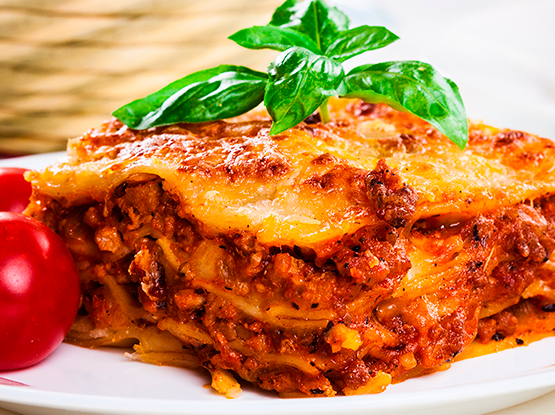

Lasanha

Descrição
A receita de lasanha de carne moída é um prato clássico, muito amado e muito fácil de preparar. Também conhecida como lasanha à bolonhesa, pela sua origem em Bolonha, na Itália, essa receita conquistou o mundo! Confira como fazer!
Ingredientes
- 500 g de massa de lasanha
- 2 caixas de creme de leite
- 3 colheres de farinha de trigo
- 500 g de mussarela
- 2 copos de leite
- 3 colheres de óleo
- 3 dentes de alho amassados
- 500 g de carne moída
- 3 colheres de manteiga
- 500 g de presunto
- sal a gosto
- 1 cebola ralada
- 1 caixa de molho de tomate
- 1 pacote de queijo ralado